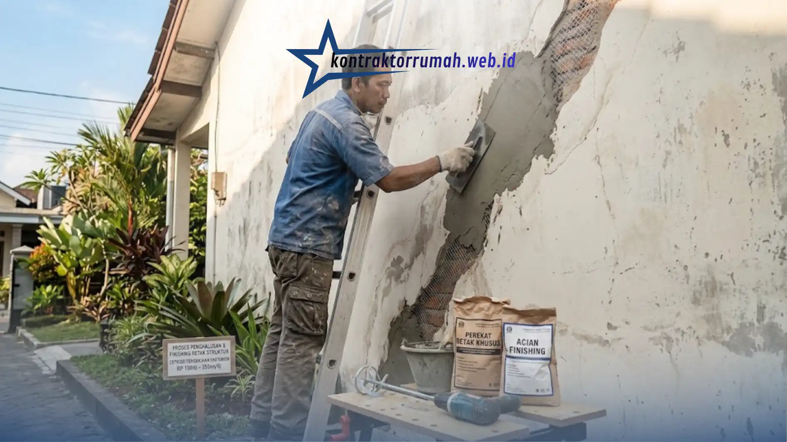

Garis-garis retakan di dinding bukan sekadar mengganggu pemandangan. Pada kasus tertentu, retakan bisa menjadi tanda adanya masalah serius pada struktur bangunan, seperti penurunan pondasi atau beban yang tidak merata.
Poin Penting
- Retak rambut bersifat kosmetik di lapisan acian, sedangkan retak struktur membelah bata dan butuh evaluasi menyeluruh.
- Ciri retak struktur: lebar lebih dari 3mm, memanjang diagonal, sering muncul di sekitar pintu & jendela.
- Estimasi biaya perbaikan berkisar Rp150.000 - Rp350.000 per meter lari, sudah termasuk jasa dan material.
- Retak struktur parah bisa memakan waktu 3-7 hari, sementara retak rambut ringan selesai dalam 1-2 hari.
- Pemasangan wiremesh pada tambalan retak struktur membuat hasil perbaikan lebih kuat & tidak mudah retak kembali.
Jangan tunggu sampai retakan membesar atau menyebabkan kebocoran saat hujan turun, karena penanganan yang tertunda biasanya berujung pada biaya perbaikan yang jauh lebih besar. Memanggil jasa perbaikan dinding retak profesional sejak retakan masih kecil adalah solusi terbaik untuk mengatasinya secara tuntas.
Kenapa Retakan Dinding Tidak Boleh Dianggap Sepele
Retakan yang dibiarkan berlarut-larut berpotensi merembet ke masalah lain, seperti air hujan yang masuk ke celah retakan dan merusak struktur besi di dalamnya, atau jamur yang tumbuh akibat kelembapan yang terperangkap.
Selain risiko kerusakan fisik, retakan yang terus melebar juga menurunkan nilai jual rumah jika suatu saat Anda berencana menjualnya. Semakin cepat retakan ditangani, semakin kecil pula risiko kerusakan yang lebih parah dan biaya perbaikan yang harus dikeluarkan.
Mengenal Jenis Retakan: Retak Rambut vs Retak Struktur
Tukang yang berpengalaman akan mengecek terlebih dahulu jenis retakan sebelum menentukan metode perbaikan yang tepat, agar penanganannya sesuai dengan tingkat keparahan yang sebenarnya.
Ciri Retak Rambut
Retak rambut pada lapisan acian mudah diperbaiki dan umumnya hanya masalah kosmetik. Ciri-cirinya berbentuk garis tipis, menyebar acak seperti jaring laba-laba, dan hanya ada di permukaan cat atau acian.
Ciri Retak Struktur
Retak struktur membelah batu bata dan berpotensi menembus ke sisi dinding sebelahnya, sehingga membutuhkan penanganan lebih serius dan biasanya melibatkan evaluasi struktur bangunan secara menyeluruh. Retak struktur cenderung lebih lebar (bisa lebih dari 3mm), memanjang secara diagonal, dan sering muncul di sekitar sudut pintu, jendela, atau titik pertemuan dua dinding.
Proses Pengerjaan Perbaikan Dinding Retak
Tahapan perbaikan berbeda tergantung jenis retakan yang ditemukan, mulai dari perbaikan ringan pada permukaan hingga penambalan ulang struktur dinding.
Proses Perbaikan Retak Rambut
Untuk retak rambut, area yang retak biasanya dikerok sedikit untuk menghilangkan bagian yang rapuh, diberi wall sealer atau dempul khusus anti-retak, dibiarkan kering, lalu diamplas halus dan dicat ulang agar hasilnya rata dengan permukaan sekitarnya.
Proses Perbaikan Retak Struktur
Untuk retak struktur, prosesnya lebih panjang: dinding harus dibobok terlebih dahulu hingga terlihat bata di baliknya, ditambal dengan campuran semen khusus yang memiliki daya rekat tinggi, diplester ulang, diaci, dibiarkan kering sempurna, baru kemudian dicat.
Pada beberapa kasus, tukang juga akan memasang kawat ayam (wiremesh) di area tambalan agar hasil perbaikan lebih kuat dan tidak mudah retak kembali.

Tahap finishing plester pada dinding luar memastikan hasil tambalan rata dan siap dicat ulang.
Estimasi Waktu dan Biaya Perbaikan
Lama pengerjaan dan biaya perbaikan sangat tergantung pada jenis dan tingkat keparahan retakan yang ditemukan di lapangan. Berikut gambaran umumnya:
| Jenis Retakan | Estimasi Waktu | Estimasi Biaya |
|---|---|---|
| Retak Rambut Ringan | 1-2 hari (termasuk waktu tunggu cat kering) | Rp150.000 - Rp200.000 / meter lari |
| Retak Struktur Parah | 3-7 hari, tergantung panjang & kedalaman retakan | Rp250.000 - Rp350.000 / meter lari |
Estimasi biaya di atas sudah termasuk jasa dan material penambal, belum termasuk cat utama. Untuk retak struktur yang membutuhkan wiremesh atau evaluasi pondasi, biaya bisa lebih tinggi tergantung kondisi di lapangan.
Tips Mencegah Retakan Muncul Kembali
Setelah diperbaiki, ada beberapa langkah yang bisa membantu mencegah retakan datang lagi:
- Pastikan sistem drainase di sekitar rumah berfungsi baik agar air tidak menggenang dan meresap ke pondasi.
- Hindari penambahan beban berlebih di atas dinding yang bukan struktural.
- Lakukan pengecekan berkala, terutama setelah musim hujan panjang.
Catatan dari tim Kontraktor Rumah: Menggunakan jasa perbaikan dinding retak bukan sekadar soal estetika, tapi juga langkah penting untuk menjaga nilai investasi dan keamanan rumah Anda dalam jangka panjang. Semakin cepat retakan ditangani, semakin kecil pula risiko kerusakan yang lebih parah dan biaya perbaikan yang harus dikeluarkan.
FAQ Seputar Jasa Perbaikan Dinding Retak
Ingin memastikan retakan di rumah Anda ditangani dengan tepat sejak identifikasi hingga finishing? Konsultasikan kondisi dinding Anda bersama tim kami sekarang.